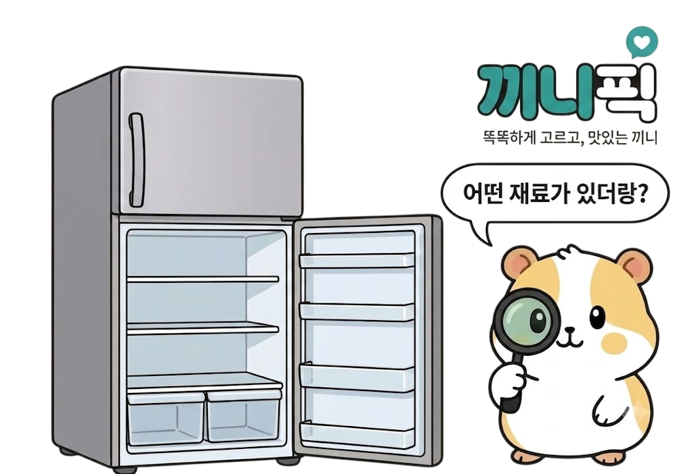

내가 가진 재료는
0개
전체 해제
검색 결과가 없어요. 다른 이름으로 찾아보세요.
채소
🌿 대파
🧅 양파
🧄 마늘
🥔 감자
🥕 당근
🟢 애호박
🌱 콩나물
🍃 시금치
무
🥒 오이
🍅 토마토
🥗 양상추
고기
🐷 목살
🥓 삼겹살
🥩 불고기용소고기
🍖 다짐소고기
🥓 베이컨
🍗 닭가슴살
해산물
🍤 새우
🦑 오징어
🐟 고등어
🍣 연어
🦪 조개류
🍀 다시마
가공식품
🥬 김치
🥫 스팸·햄
🐟 참치캔
🍢 어묵
🌭 소시지
🧀 치즈
면·곡물
🍚 밥
🍜 라면
🍞 식빵
🍝 스파게티면
🍜 우동면
🥢 당면
기타
🥚 계란
🧈 두부
🥣 순두부
🍶 식용유
🫒 올리브유
🍶 참기름
조미료
🧂 소금
🫙 설탕
🍶 간장
🍶 국간장
🧪 식초
🍯 물엿
🌶️ 고춧가루
🥫 마요네즈
🌶️ 고추장
🫘 된장
🧂 후추
🫙 굴소스
🥫 치킨스톡
완료